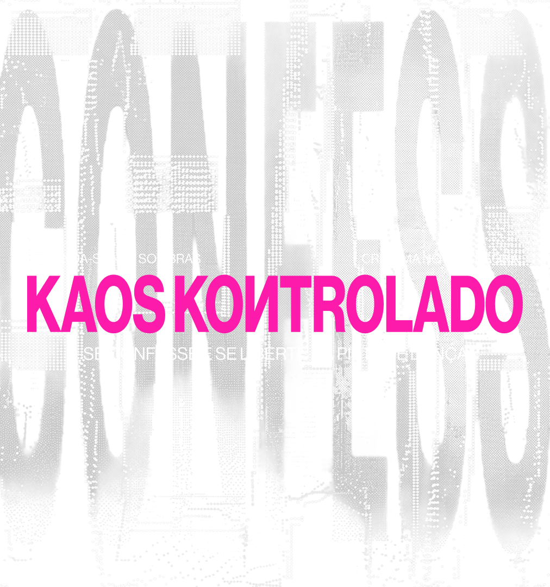
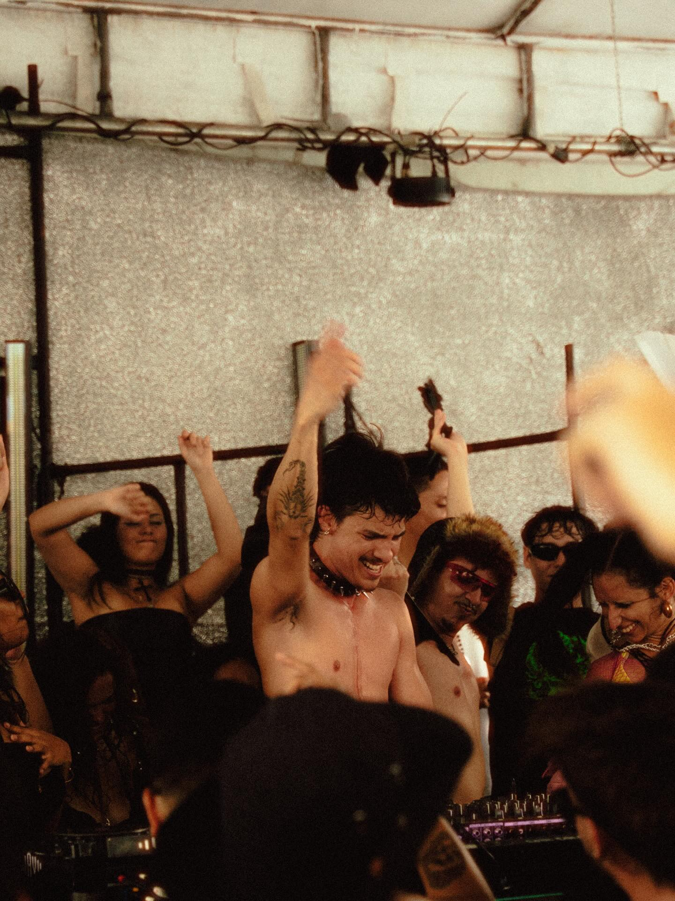
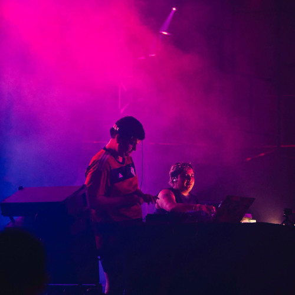
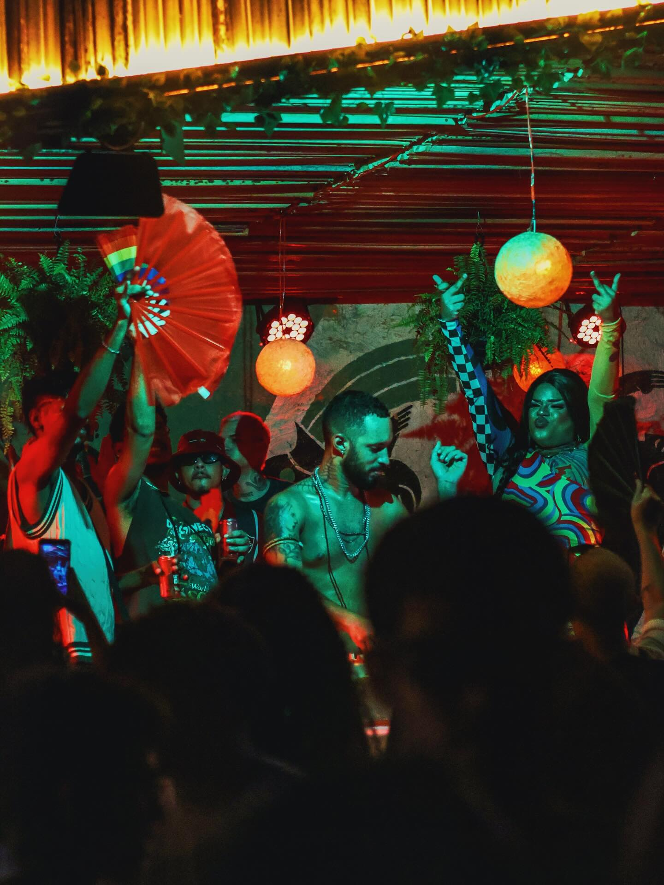
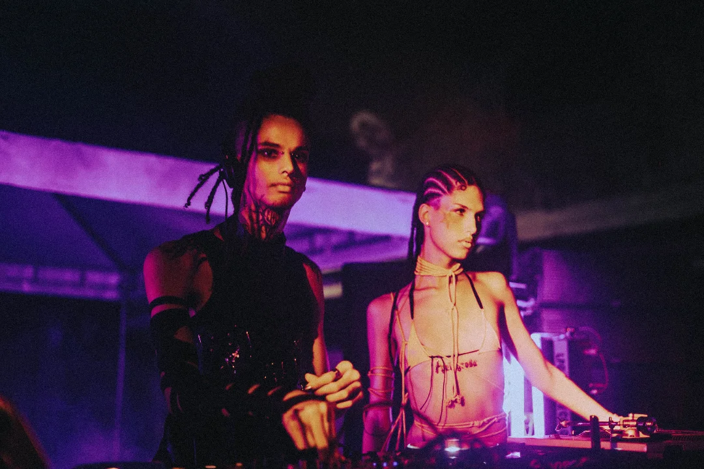

Quem movimenta a pista de dança?
Clique nos cards e conheça os DJs que trazem o fervor às noites brasileiras.
MISS TACACÁ
BELÉM-PAFonte: Instagram
Mulher trans, periférica, nortista e indigena, a rainha do Tecnomelody Miss Tacacá utiliza a CDJ como ferramenta de cura, beleza e emancipação política. Indicada ao Women’s Music Event (WME) Awards e consagrada com duas históricas apresentações no Boiler Room, sua plataforma serve para projetar corpos semelhantes: é a idealizadora do projeto Transamazônicas e da Sucuri Fest, uma intervenção itinerante que conecta Belém, Fortaleza e o Rio de Janeiro, celebrando o som que vem das periferias do Brasil e comprovando que o potencial vanguardista da música eletrônica nasce à margem do mercado tradicional.
DJ SEXTASY
FORTALEZA-CE
Fonte: Instagram
Autodenominado de "Sexytechno Provocateur", o fortalezense radicado na Alemanha usa a pista de dança para explorar os limites da sensualidade humana. Fundador da festa Bunker, em Fortaleza, injetou o tom industrial das noites berlinenses diretamente no underground da capital do Ceará. Consagrado na cena europeia como idealizador da festa itinerante Sexpressions, uma label que leva a libertação sexual e a exploração do corpo ao resto da Europa, por meio do suor e do frenesi da dança. Utilizando-se do seu estilo autoral, que traz batidas rápidas, sincopadas e sensuais de ritmos latinos e tribais junto dos sons industriais e pesados do techno, a missão do Sextasy é transformar a pista de dança em um espaço de acomlhimento, onde todos se sintam confortáveis para renderem-se aos seus instintos mais primitivos.
SELO BATEU
Lucas BMR e Babita
FORTALEZA-CE
Fonte: Instagram
A atual revolução clubber que movimenta as noites de Fortaleza tem data e local de fundação: agosto de 2026, na Praça dos Leões, o DJ Lucas BMR começou algo que transformaria, ao longo de 10 anos, a cena noturna da capital cearense. O que era para ser um rolê comum para 300 pessoas, a 1ª Bateu atraiu quase 4 mil interessados e, desde então, se tornou um clássico das festas na cidade. Em 2019, a também DJ e comunicadora Babita assume a co-liderança do selo e transformou a Bateu na maior potência de fomento de música eletrônica do Nordeste e juntos pavimentaram a pista para a proliferação de novos coletivos, tornando artistas desconhecidos da cena local em referências e consolidando um movimento de resistência que hoje mistura house, techno, funk e latinidades.
TRANSTORNO
TERESINA-PI
Fonte: Instagram
Uma das vozes que molda a cultura eletrônica do Nordeste, Transtorno é o produtor cultural por trás da Lakraya Produções, festa que convida artistas independentes locais e serve de plataforma para alavancar novos talentos, é também presente fortemente no Festival da Bailerage (que une o Carnaval com a música eletrônica), atraindo centenas de pessoas por festa e consolidando um espaço seguro para a diversidade queer e periférica nas madrugadas de Teresina. Seu estilo musical é uma fuga do purismo, mistura eletrônica underground com os ritmos prevalentes nas periferias do Nordeste.
CLEMENTAUM
SÃO JOSÉ DOS PINHAIS-PRFonte: Instagram
A potência que levou a música eletrônica brasileira para o mundo inteiro, Clementaum não é chamada de ‘La Mayor’ à toa. Vencedora do troféu Women’s Music Event (WME) Awards, em 2024, residente na rádio britânica Rinse FM, e cria da cena independente, ela usa sua projeção internacional como manifesto político: o futuro e a inovação da música eletrônica latina residem na valorização das minorias e produtores das quebradas. Popularizou as batidas de techno, vogue e passaçaum, tanto entre os brasileiros, quanto internacionalmente, por meio de músicas com Pabllo Vittar, Pedro Sampaio, e suas apresentações no Primavera Sound Barcelona e Boiler Room.
IMANIX
FORTALEZA-CE
Fonte: Instagram
Levando a cultura underground para todo o Brasil com sua sonoridade punk, visceral e pesada, a Imanix lidera o Coletivo IGNIS, assinando festas como a Ignis Erótica (que busca o hedonismo, a libertação sexual e corporal), a Ignis303 e o CarnaHARD, ocupando espaços “esquecidos e improváveis” na capital cearense. Para além da discotecagem, também atua como fotógrafa, conhecida na cena por fazer a cobertura de diversas festas, no Nordeste e afora.
Conheça algumas vertentes da música eletrônica
Enquanto você lê, dance e se entregue aos prazeres da música eletrônica brasileira
TRIBAL
GUARACHA
ROCK DOIDO
TECHNO
HOUSE
QUEM FEZ O QUÊ?
Eu. Eu fiz tudo.

Fonte: Willer Ribeiro
Designer nas horas vagas, programador quando me convém, pesquisador por diversão, clubber e amante da pista, fiz esse projeto para demonstrar meu amor e orgulho da cena brasileira de música eletrônica, para exaltar conhecidos e desconhecidos, amigos e figuras públicas e compartilhar a diversidade de uma cena que busca trazer a libertação política, sexual, corporal e tudo mais.
Espero que sintam o frenesi que eu sinto todas as vezes que saio de casa e me rendo às tentações da pista de dança. Obrigado.
Agora o papo técnico: escrito no Google Docs ao longo de várias semanas, com informações retiradas de notícias, conversas e vivências próprias. O projeto foi desenhado no Figma, antes de ser programado em HTML E Tailwind CSS. E, claro, tudo foi feito por quem vos fala, Willer Ribeiro ❤️.
REFERÊNCIAS
De onde saiu tanta informação?
SANTANA, Tarsila Chiara Albino da Silva. Da House Music à Bagaceira: Uma etnografia sobre música eletrônica, espacialidade e (homo)sexualidade masculina em Recife, PE. 2017. 230 f. Dissertação (Mestrado em Antropologia Social) — Universidade Federal do Rio Grande do Norte, Natal, 2017.
NUNES, Jefferson V. Livres, puros e felizes: culturas juvenis e festas rave em Fortaleza. 2010. Dissertação (Mestrado em Sociologia) — Universidade Federal do Ceará, Fortaleza, 2010.
MAGALHÃES, Manoel. Peripheral Electronic Music: An Ethnographic Study of Rock Doido Parties in Northern Brazil. Intercultural Relations, v. 2, n. 16, p. 53-72, 2024.
AGUIAR, Rafael Silveira de. “Eu só vou dizer que você é um DJ daqui a dez anos”: A busca por reconhecimento e consagração entre os DJs de Fortaleza - CE. 2018. 197 f. Dissertação (Mestrado em Comunicação) — Instituto de Cultura e Arte, Universidade Federal do Ceará, Fortaleza, 2018.
BEATRIZ, Elena. Avisa que é ela, la mayor: Clementaum. Alataj, Trend, 2 abr. 2025. Disponível em: https://alataj.com.br/trend/avisa-que-e-ela-la-mayor-clementaum. Acesso em: 25 jun. 2026.
CALDAS, Ana Beatriz. 'Primavera Clubber' em Fortaleza: com musicalidade e público mais diversos, coletivos de DJs resgatam cultura clubber. Diário do Nordeste, Verso, Fortaleza, 31 jan. 2025. Disponível em: https://diariodonordeste.verdesmares.com.br/verso/primavera-clubber-em-fortaleza-com-musicalidade-e-publico-mais-diversos-coletivos-de-djs-resgatam-cultura-clubber-1.3611771. Acesso em: 25 jun. 2026.
DJ SEXTASY · Perfil do Artista. Resident Advisor, Londres, 2026. Disponível em: https://pt-br.ra.co/dj/djsexstasy. Acesso em: 25 jun. 2026.
DJ SEXTASY. About: Biography. Spotify, 2026. Disponível em: https://open.spotify.com/artist/djsexstasy/about. Acesso em: 25 jun. 2026.
PEIXOTO, Ester. Miss Tacacá, a DJ Rainha do Tecnomelody. EmergeMag, Artes, 23 jul. 2025. Disponível em: https://emergemag.com.br/miss-tacaca-a-dj-rainha-do-tecnomelody/. Acesso em: 25 jun. 2026.
RONALDO, Yuri. Clementaum é eleita DJ do Ano no Women's Music Event Awards Brasil. Hashtag Pop, Notícias, 18 dez. 2024. Disponível em: https://hashtagpop.com.br/clementaum-e-eleita-dj-do-ano-no-womens-music-event-awards-brasil/. Acesso em: 25 jun. 2026.
SZEZERBATZ, Yasmin Louise. Dia do Techno: conheça os subgêneros da música eletrônica. O Povo, Vida & Arte, Fortaleza, 9 dez. 2025. Disponível em: https://www.opovo.com.br/vidaearte/2025/12/09/dia-do-techno-conheca-os-subgeneros-da-musica-eletronica.html. Acesso em: 25 jun. 2026.
TRÉZ, João Gabriel. Festa Bateu comemora seis anos com edição especial na praia. O Povo, Vida & Arte, Fortaleza, 4 ago. 2022. Disponível em: https://www.opovo.com.br/vidaearte/2022/08/04/festa-bateu-comemora-seis-anos-com-edicao-especial-na-praia.html. Acesso em: 25 jun. 2026.